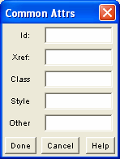

All MathML elements share some common attributes, Id, Xref, Class, Style and Other. These do not affect the formula appearance in the equation editor, but are instead intended to convey information to other, external applications (web browsers, for example).

They are grouped together in the Common Attributes panel, and their acceptable values are arbitrary strings. This panel is the default one for elements where none of the others is applicable (like the root math element).